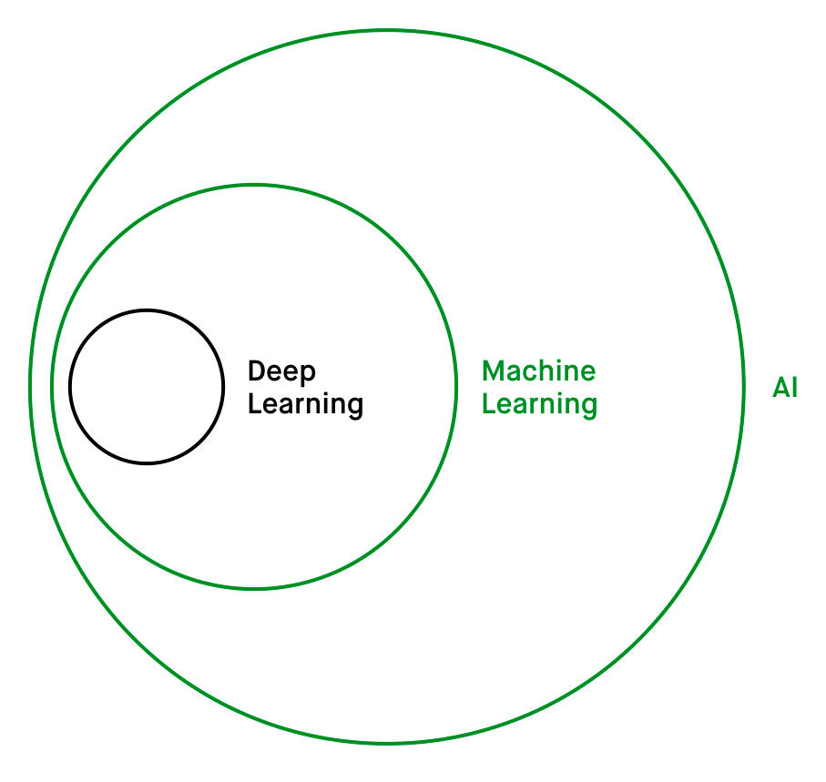
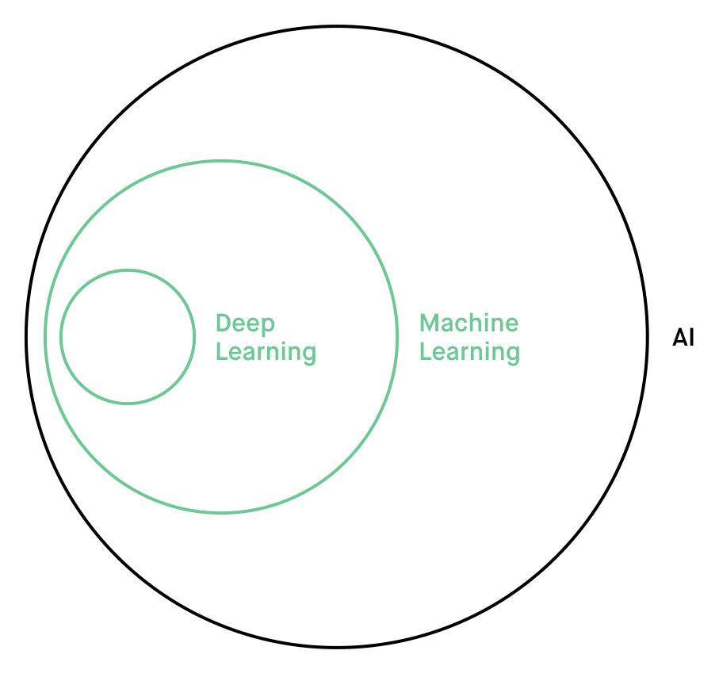
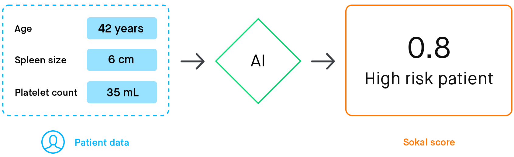
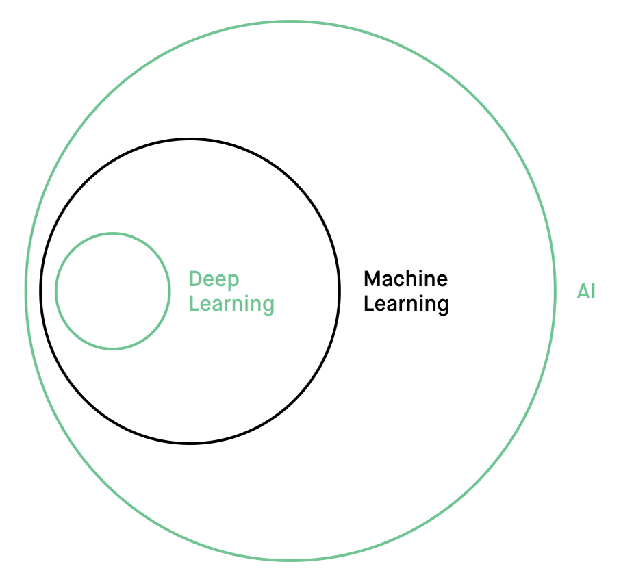
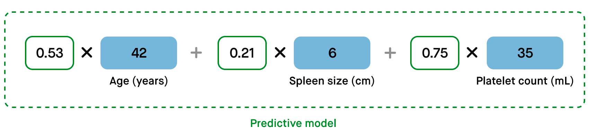
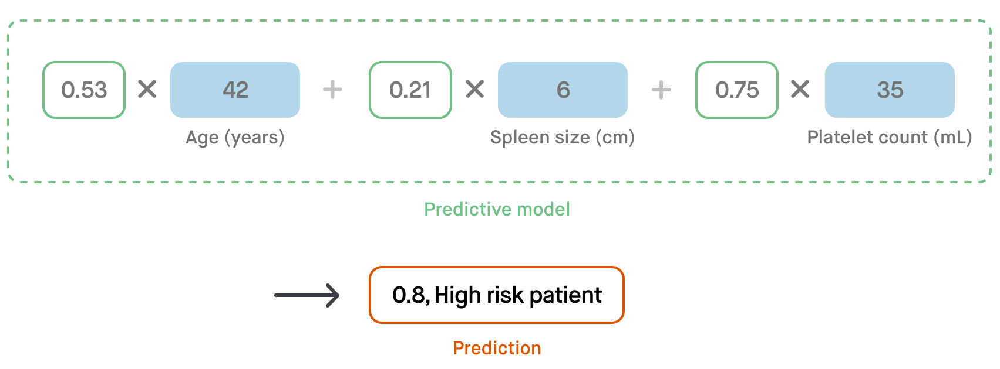
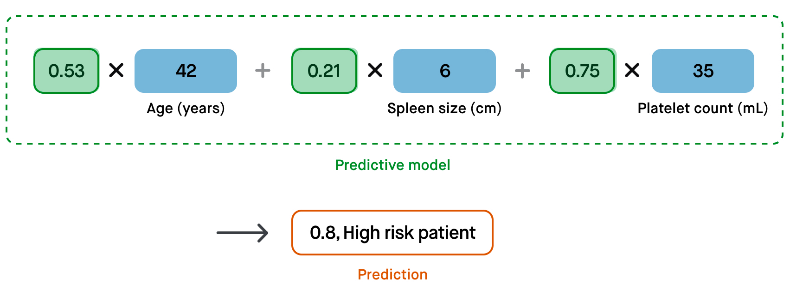
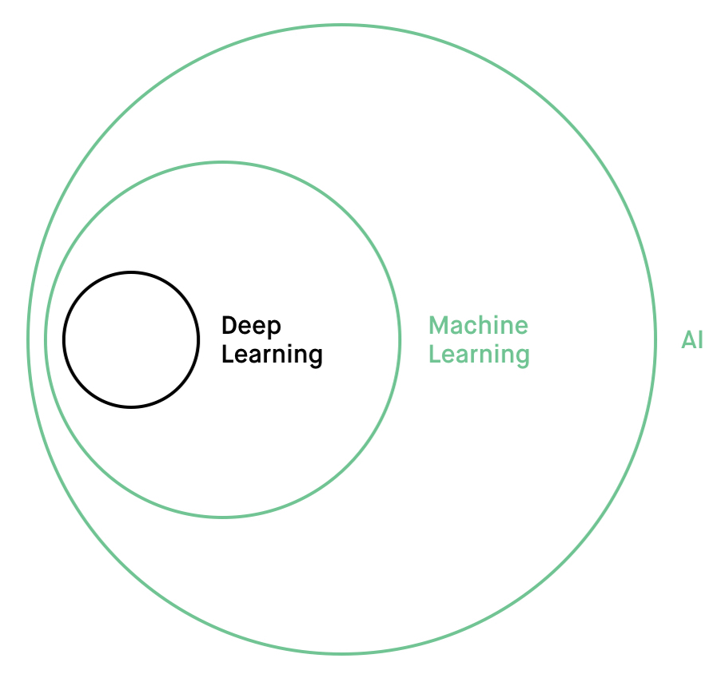
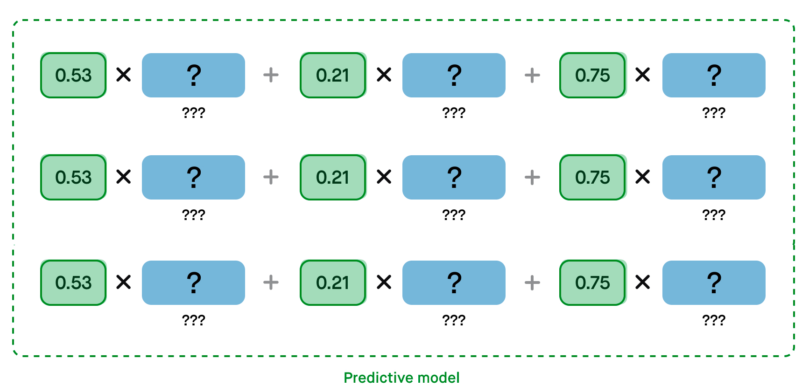
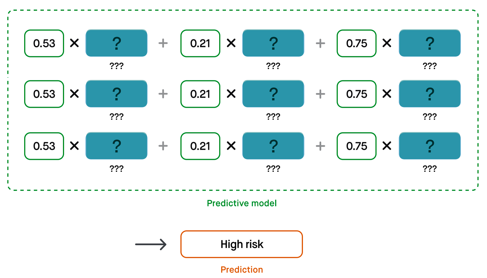

Hi! We are Louis and Parker, two seniors in USC's Iovine and Young Academy. Simply Not so simply we want to use interface design to remove some of the mystery around how a modern AI makes decisions. That way doctors can interact with and trust in an AI's responses and use them to better treat patients.
(Thanks to Laura Deming for wholly inspiring the look and feel of this page.)
Please check out some of our motivations, findings, and thoughts below. We aim for our work to be accessible to everyone, so we hope you keep reading regardless of your familiarity with AI.
You’ve probably heard these words thrown around a bunch — AI, machine learning, and deep learning. And sometimes it might seam like they can be used interchangebly.
But that's not really the case.
Though these concepts are all related, they actually imply pretty different things. AI and machine learning have a long history of being applied within healthcare, while deep learning represents something entirely new to the field.
An AI is really just any computer program that makes a prediction given some input. In this way, 'AI' can act as an all-encompassing term for systems that make decisions.
Input → AI → Prediction .. This kind of technology isn't anything new for healthcare.
A more than 40-year-old example is the Sokal score.
This is a program that takes in specific details about a leukemia patient, like their age, spleen size, and platelet count. It is then able to assign them a risk-level to indicate how aggressive their disease is.
Perfect: Input → AI → Prediction .. The program that generates the Sokal score is a clear example of an AI. But what does it do with the input values to turn them into a single, meaningful number? And how does it do this accurately?
This is where machine learning comes in!
Machine learning is how an AI develops the ability to take in some input values, manipulate them, and then put them together to create a prediction. 
So if we take a peek inside how the Sokal score works, we see it's just a formula. It takes in the input variables and multiplies them each by a certain number. 
Then when those results are all put together, we get a single value—the sokal score—that corresponds to that patient's risk level.
The magic of what makes this work is getting the right numbers that the inputs are multiplied by — and the process to get those right numbers is machine learning.
Deep learning is how an AI develops the ability to take in a large, abstract input (like a picture), break it apart in ways that the AI determines are important, and then manipulate it to arrive at a prediction.
Now what if you needed an AI to make a decision that depended on a whole bunch of factors? A lot more than the number of inputs that Joseph Sokal determined were important for sorting leukemia patients into risk groups.
More specifically, what if you wanted an AI to takle a problem that depended on so many factors that you couldn't even identify them all yourself? The kind of decision that requires an expert, like a doctor?
This is where deep learning comes in — as it can actually learn the factors it should consider to make a decision. Because these factors are determined by the AI, we actually don't know what they are, so we represent them with question marks.
Isn't that pretty remarkable? That, through deep learning, an AI can develop its own strategy for making a decision (instead of optimizing a strategy it's given, like in finding what to multiply a patient's age and spleen size by in the Sokal score formula.)
Published by 8:00AM, 1/11